[목차]
#1 물체의 구성요소
#2 기본 세팅 (feat. Material)
#3 RigidBody 중력 작용
#4 Collider 충돌 영역
*개인적인 공부 내용을 기록한 글 이기에, 잘못된 내용이 있을 수 있으며 지속적으로 수정해 나갈 예정입니다.
#1 물체의 기본 구성요소
처음 Sphere 오브젝트를 생성하면, 기본적으로 다음과 같은 컴퍼넌트들이 부착되어 있습니다.
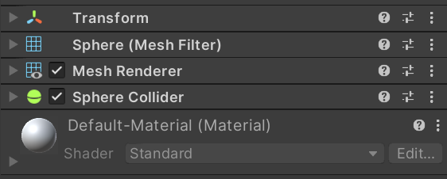
Transform : 오브젝트의 위치를 결정하는 컴퍼넌트입니다.
Mesh Filter : 오브젝트의 Mesh를 결정하는 컴퍼넌트입니다. Mesh는 무수히 많은 점과 선으로 이루어져 있는데, Sphere 오브젝트도 Mesh로 구성되어 있습니다.
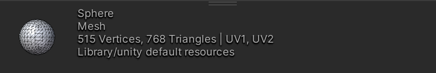
Mesh Renderer : 오브젝트 표면의 재질 및 색상 등을 담당하는 컴퍼넌트입니다.
Collider : 충돌영역으로, 물리 효과를 받는 기능을 수행하는 컴퍼넌트입니다.
#2 기본 세팅 (feat. Material)
물체의 초기 컴퍼넌트들에 알아 보았으니, 다음으로 충돌을 구현하기 위한 기본적인 세팅을 하도록 하겠습니다.
우선, Sphere(구) 오브젝트 밑의 바닥을 만들기 위해 3D Object > Plane 을 클릭해 바닥 오브젝트를 만들어 줍니다.
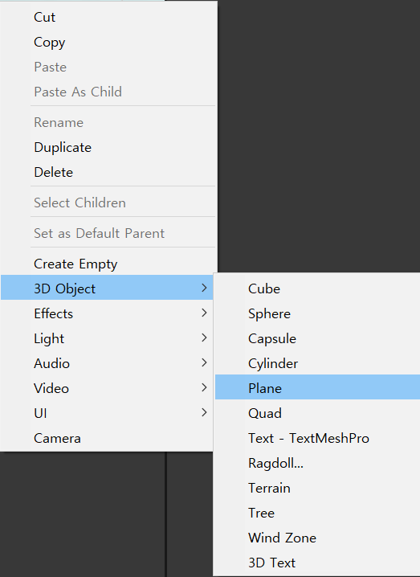
그러면 아래와 같이 평평한 하얀색 바닥이 생성 되는데, 구와 구별하기 쉽도록 바닥의 색상을 바꿔 보도록 하겠습니다.
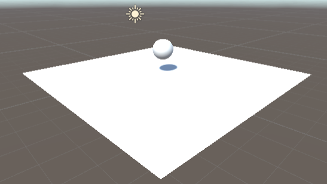
Assets 창에서, 오른쪽 마우스를 클릭한 뒤 Create > Material (재질) 을 생성해 줍니다.
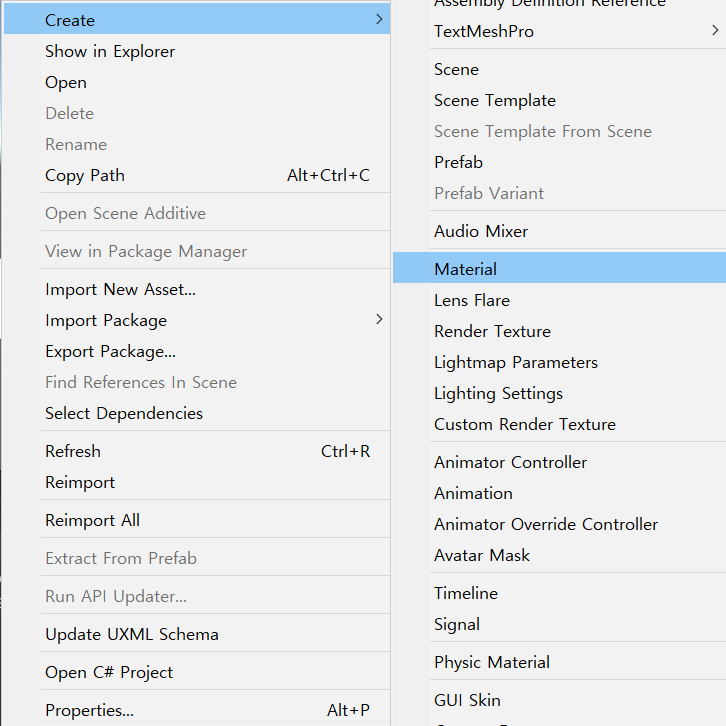
작업을 수행하면, Assets 폴더에 "New Material" 이라는 이름의 파란색 원 모양 에셋이 생성될 것입니다. New Material 클릭 > Inspector 창 > Albedo 를 누른 뒤 바닥 오브젝트에 적용 할 원하는 색상을 선택해 줍니다. ( 저는 검은색으로 선택했습니다.)
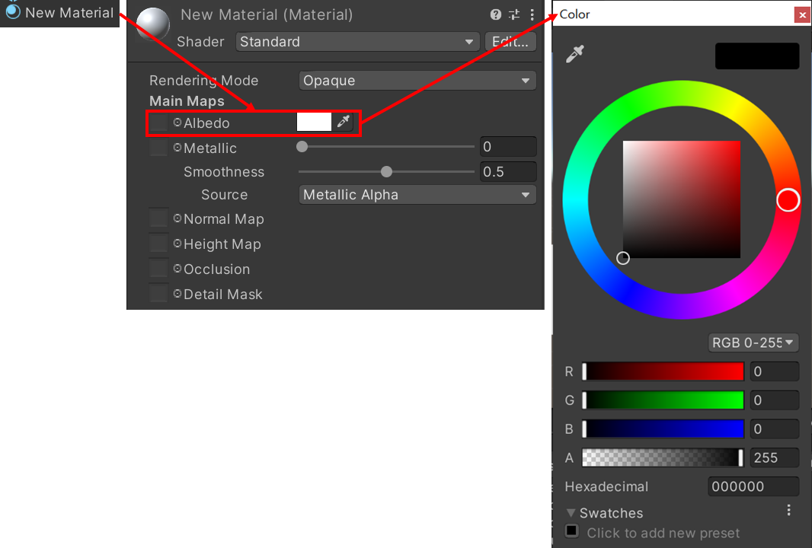
#1 물체의 구성요소 파트에서 Mesh Renderer 는 오브젝트 표면 재질을 담당하는 컴퍼넌트라고 소개 했습니다.
제작한 "New Material"을 Plane(바닥) 오브젝트의 Mesh Renderer 컴퍼넌트 - Materials 에 드래그 앤 드랍 해줍니다.
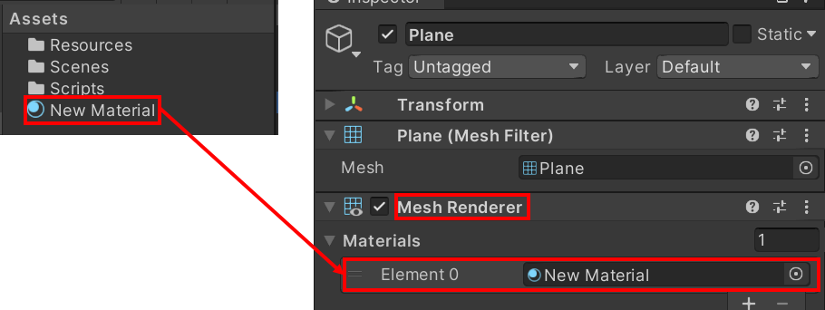
이제 기본적인 세팅은 끝마쳤습니다.
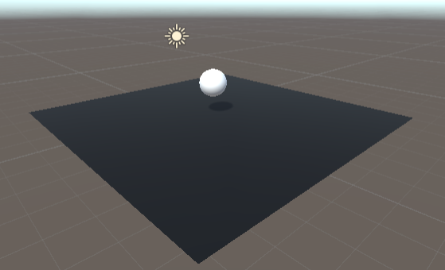
#3 RigidBody 중력 작용
이제 플레이 버튼을 눌러보면, 여전히 Sphere(구) 오브젝트가 떨어지지 않고 공중에 떠 있을 것입니다.
구 오브젝트에 중력을 부여하기 위해서는 중력을 담당하는 컴퍼넌트인 RigidBody 를 추가해 주어야 합니다.
Sphere 오브젝트의 인스펙터에서, Add Component 를 클릭한 뒤, Rigidbody를 클릭합니다.
(3D는 RigidBody, 2D는 RigidBody2D 를 부착해 줍니다.)
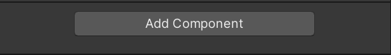 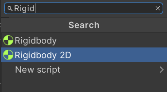
다시 플레이를 눌러보면 , 구 오브젝트에 중력이 부여되어 바닥으로 떨어지게 됩니다.
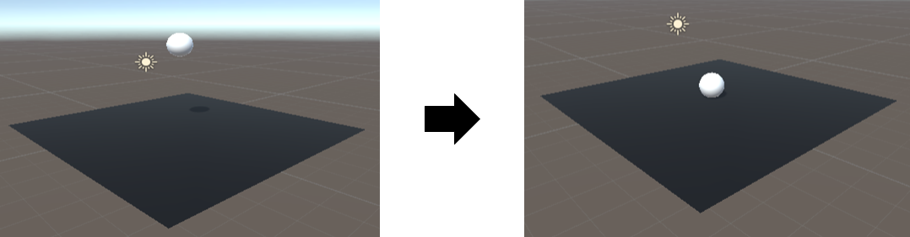
* RigidBody 컴포넌트 속성
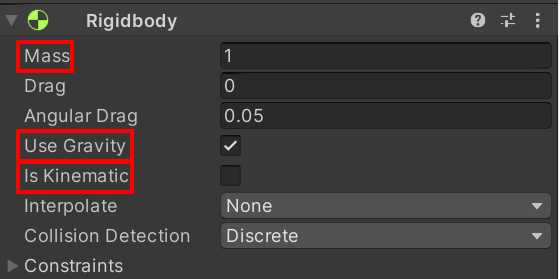
Mass : 질량을 담당하는 속성으로, 수치를 증가시키면 충돌의 세기가 강해집니다.
Use Gravity : 중력을 담당하는 속성입니다. 체크를 해제하면, 중력의 영향을 받지 않습니다.
Is Kinematic : 체크하면 외부 물리 효과를 무시합니다. (함정을 만들 때 사용하곤 합니다.)
예를 들어, 장애물에 Is Kinematic 효과를 부여하여, 플레이어와 충돌하더라도 장애물이 뒤로 밀려나가지 않게 해줍니다.
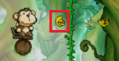
#4 Collider 충돌 영역
Collider는 물리 효과를 받기 위해 충돌 영역을 담당하는 컴포넌트 입니다.구 오브젝트를 클릭한 뒤 Sphere Collider에서, Edit Collider를 누르면, 다음과 같이 표면에 형광색 선이 생깁니다.
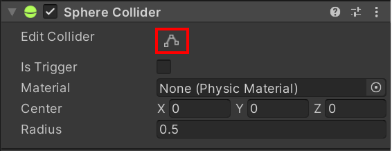 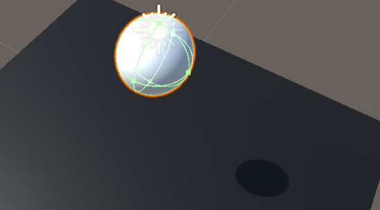
오브젝트 간 충돌은 오브젝트 자체가 아닌 그림의 형광색 선으로 감지합니다. 예시로 선을 조금 늘려 보도록 하겠습니다.
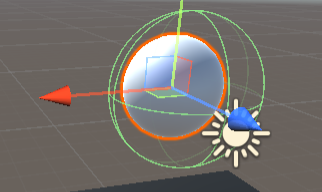
플레이버튼을 눌러보면, 그림처럼 형광색 선을 충돌 영역으로 감지하고 있는 것을 확인 가능합니다.
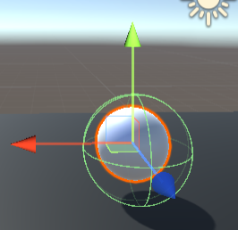